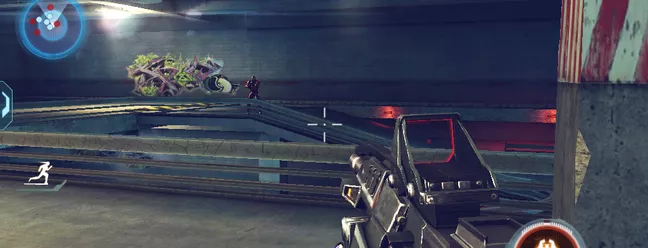
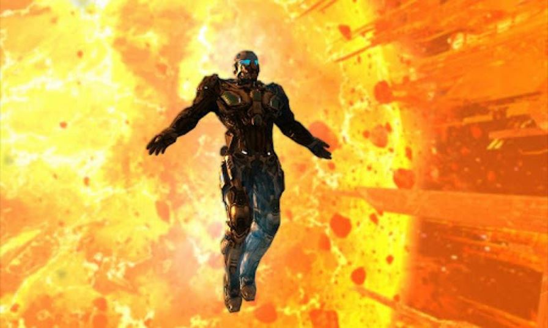

Surpreenda-se com os super gráficos de NOVA 3
O mais impressionante game de tiro de ficção científica para smartphones está de volta. A produtora Gameloft lançou NOVA 3, novo capítulo em sua série de maior sucesso e que sempre apresenta gráficos de ponta no seu aparelho móvel. Tão divertido quanto antes, o jogo apresenta uma série de novidades, entre elas várias armas e poderes, tudo para que o jogador possa derrotar hordas de inimigos e também ameaças gigantescas que vão surgir de tempos em tempos. Os impressionantes gráficos de NOVA 3 não deixam barato para qualquer jogo de console. O game apresenta efeitos nunca antes vistos em dispositivos móveis, como sombras e luz em tempo real, sistema de partículas, física ragdoll (utilizada em grandes jogos de console) e mais.
UMA HISTÓRIA DE CONFLITOS
A história de NOVA 3 se passa pouco tempo após o último game, cerca de quatro meses, desde que Kal destruiu os planos dos Volterites, sabotando as suas fábricas de guerra e impedindo a extração dos Artefatos Judger. Porém, no seguimento do assassinato do Presidente Folsom, o governo entregou as colônias ao Protetorado Volterite, de modo a evitar uma guerra civil. Kal Wardin tem passado desapercebido desde a morte de Folsom, mas agora recebeu um apelo desesperado de Yelena, para voltar à Terra. Uma vez mais, o herói tem de surgir para salvar a humanidade. Com isso, os cenários do jogo serão bem variados, desde uma Terra devastada pela guerra, passando pela gélida cidade de Volterite. O modo multiplayer também está de volta, com partidas online entre 12 jogadores e em seis modos de jogo (Capture the Point, Free-for-All, Capture the Flag, Instant Action e outros). No total, seis mapas aguardam os participantes. Outra novidade durante as fases online é que aliados de um mesmo tipo podem ocupar o mesmo veículo, cada um em um assunto – um na direção e outro na arma montada. Vale avisar que, graças aos gráficos de última geração, NOVA 3 ocupa cerca de 2GB da memória do seu dispositivo.
MINHA OPINIÃO
NOVA 3 é mais um jogo da produtora Gameloft que merece ser jogado, cada vez mais vezes e por cada vez mais fãs. O game é uma típica aventura em primeira pessoa, mas com uma pegada mais para o lado de “ficção científica”, com armamentos e cenários futuristas, tudo para te dar um gostinho de filme de cinema. O game tem um enredo bem contado, principalmente por ser um título exclusivo de plataformas do tipo mobile, como iOS e Android. Aqui os fãs irão encontrar uma verdadeira aventura com muita ação e até mesmo reviravoltas na história, daquelas que geralmente são bem inesperadas. Além da ação e aventura, NOVA 3 conta com gráficos de primeira qualidade, com efeitos visuais de cair o queixo, efeitos variados de luminosidade, partículas, entre outros detalhes técnicos que vão surpreender os olhares mais incautos. Fica até difícil de acreditar que este seja um game que cabe no seu bolso. Há ainda um modo multiplayer, mas infelizmente ele suporta poucos jogadores e as partidas não costumam ser tão divertidas quanto deveriam. A conexão cai constantemente, seja por instabilidade na rede Wi-Fi ou de dados ou por mera falha de servidor. Porém, a verdadeira diversão de NOVA 3 está em seu modo campanha, que lembra muito outros jogos de tiro do mesmo tipo. Sua história e jogabilidade, em muitos casos, lembram uma mistura de Halo com Call of Duty, e deve chamar a atenção dos fãs dessas duas séries.